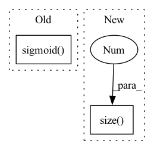

Pattern ID :41692

Before Change
// Update gate of the GRU.
update_gate_conv = layers.SNConv2D(num_channels, self._kernel_size, sn_eps=self._sn_eps)
update_gate = F.sigmoid(update_gate_conv(xh))
// Gate the inputs.
gated_input = torch.cat([x, read_gate * prev_state], dim=1)
After Change
def forward(self, x: torch.Tensor, hidden_state=None) -> torch.Tensor:
outputs = []
for step in range(x.size(1)):
// Compute current timestep
output, hidden_state = self.cell(x[:, step, :, :, :], hidden_state)
outputs.append(output)
In pattern: SUPERPATTERN
Frequency: 3
Non-data size: 2
Instances
Fragment ID: 116968744
Project Name: openclimatefix/skillful_nowcasting
Commit Name: b080785f5f559396d0b7e1a52d1c6d9a948d9439
Time: 2021-11-08
Author: jacob@bieker.tech
File Name: nowcasting_gan/layers/ConvGRU.py
M Class Name: ConvGRU
N Class Name: ConvGRU
M Method Name: forward(3)
N Method Name: forward(3)
M Parent Class: torch.nn.Module
N Parent Class: torch.nn.Module
M File Name: nowcasting_gan/layers/ConvGRU.py
N File Name: nowcasting_gan/layers/ConvGRU.py
M Start Line: 19
M End Line: 51
N Start Line: 70
N End Line: 78
'>
Before Change
cur_h = self.fusion(cur_h)
cur_h = self.relu(cur_h)
output = self.output(cur_h)
output = self.sigmoid(output)
return output
After Change
labtest = x[:, :, self.demo_dim :]
batch_size = labtest.size(0)
time_step = labtest.size(1)
feature_dim = labtest.size(2)
assert feature_dim == self.lab_dim
self.agent1_action = []
'>
Fragment ID: 116968745
Project Name: yhzhu99/covid-ehr-benchmarks
Commit Name: 41e28f49dd30d760c6c439a5cf41590262c9b76b
Time: 2022-06-24
Author: yhzhu99@gmail.com
File Name: app/models/backbones/agent.py
M Class Name: Agent
N Class Name: Agent
M Method Name: forward(2)
N Method Name: forward(3)
M Parent Class: nn.Module
N Parent Class: nn.Module
M File Name: app/models/backbones/agent.py
N File Name: app/models/backbones/agent.py
M Start Line: 118
M End Line: 204
N Start Line: 117
N End Line: 201
'>
Before Change
out0, out1 = torch.nn.functional.linear(torch.cat([out, sequence_input], 1),
linear_param,
None).chunk(2, 1)
return torch.sigmoid(out0) * out1.tanh()
@staticmethod
def _calc(fn_input, sequence_input, linear_param, depth):
After Change
@staticmethod
def _single_calc(fn_input, sequence_input, linear_param):
out = fn_input - fn_input.mean(dim=0, keepdim=True)
features = out.size(1)
out = torch.mm(out, linear_param[:features]) + torch.mm(sequence_input, linear_param[features:])
return torch.nn.functional.relu6(out[:, :features]) * out[:, features:].tanh()
@staticmethod
'>
Fragment ID: 116968743
Project Name: homebrewnlp/homebrewnlp
Commit Name: 2c4b92319ccca8f3a6f7c2677b9f0fbf88f7b8db
Time: 2020-08-05
Author: 39779310+ClashLuke@users.noreply.github.com
File Name: module.py
M Class Name: ReversibleRNNFunction
N Class Name: ReversibleRNNFunction
M Method Name: _single_calc(3)
N Method Name: _single_calc(3)
M Parent Class: torch.autograd.Function
N Parent Class: torch.autograd.Function
M File Name: module.py
N File Name: module.py
M Start Line: 8
M End Line: 12
N Start Line: 7
N End Line: 10